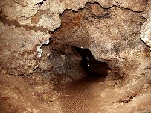
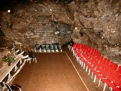

| In Deutsch |
| In Deutsch |
Altensteiner Höhle
Cave of Altenstein
Useful Information
 |
| Image: the entrance to the cave. |
| Location: | A4 exit Eisenach-Ost, F19 20km South to Gumpelbach, turn left to Bad Liebenstein-Schweina. when leaving Schweina on the road to Schloß Altenstein and Bad Liebenstein. (50°49'42.06"N,10°20'48.25"E) |
| Open: |
to MAR closed. [2017] |
| Fee: | [2017] |
| Classification: | |
| Light: | electric |
| Dimension: | L=500m |
| Guided tours: | L=360m, St=112, V=4,500/a [200?]. See im unausgebauten Teil: L=250m |
| Photography: | |
| Accessibility: | |
| Bibliography: |
Die Altensteiner Höhle,
Gemeinde Schweina, Thüringen. Hrsg: Kulturbund Gemeinde Schweina |
| Address: | Altensteiner Höhle, Höhlenverwaltung, 36448 Schweina/Thüringen, Tel. +49-36961-2687 oder +49-36961-2688. |
| As far as we know this information was accurate when it was published (see
years in brackets), but may have changed since then. Please check rates and details directly with the companies in question if you need more recent info. |
|
| Last update: | $Date: 2015/11/20 13:16:53 $ |
History
|  |
| Image: a typical passage. |
| 1799 | discovered during road works at the road from Schweina to Altenstein. | |
| 1802 | developed with artificial entrance and paths. | |
| 19th cty | The Dukes of Meiningen organize concerts and Illuminationen (illuminations) for selected guests. | |
| 1951 | start of exploration and development of the cave by the Natur- und Heimatfreunde from Schweina. | |
| 1984 | exhibition about the genesis of the cave inside the cave opened. | |
| 1984 | start of regular cave concerts. | |
| 2016 | cave manager Bernd Mylius dies and cave is temporarily closed while searching for a new lessee. |
Description
Schloß Altenstein (Castle Altenstein) and Ruine Liebenstein (Ruin of Liebenstein) are standing on massive rocks, which were formed during the Upper Permian which is called Zechstein locally. Huge reefs grew on submarine ridges. Today they are part of the saddle of Ruhla.
The reefs of the Zechstine were completely eroded on the top of the Thüringer Wald (Forrest of Thuringia). In the southern and northern foreland the Zechstien layers are deep below surface covered by Triassic sediments. But here, near Schweina, is a small belt, a step which was lifted like the Thüringer Wald, but not this high. So here, by accident, the reefs are right at the surface, and form characteristic rocks, as the limestone is harder than the surrounding schists.
|  |
| Image: the concert hall, originally called the dome. |
The cave of Altenstein was formed as a primary cave, a reef cave, during the Zechstein, when the reef grew. The corals grew irregular and gaps and caverns were enclosed by limestone. Much later, when the fossilized reef reached the surface and karstification started, the water used the existing caverns and widened them. So the cave river connected numerous irregular caverns to a long passage. The walls are characteristic, still looking like corals. The rock has no bedding but numerous irregular hollows. But between the different reefs, sometimes small areas with sediments, fine sand and debris, exist. They were formed with the reef.
In the cave the bones of
 cave bears (Ursus spelaeus)
were discovered, but they were carried into the cave by flowing water.
The cave had no natural entrance, until it was discovered in 1799.
cave bears (Ursus spelaeus)
were discovered, but they were carried into the cave by flowing water.
The cave had no natural entrance, until it was discovered in 1799.
This cave has no speleothems. There is no water seeping from the ceiling, and so there is no possibility for dripstones to form. Most likely there is a water tight layer of clay above the cave.
The biggest chamber of the cave, the Dom (doem) is used for concerts for many years now. They take place at Sunday afternoon during the summer. At this time there are no tours into the cave!
Around the Altensteiner Höhle and in the other reefs nearby are several other caves. Soem small caves are in the Altensteiner Park behind Schloß Altenstein. This rock is called Hohler Fels, because of a legend, which tells it was completely hollow and filled with water. In Bad Liebenstein is the Erdfallhöhle, where also remains of cave bears were discovered.
In Bad Liebenstein, along the thrusts of the southern rim of the Thüringer Wald, carbon dioxide rich water rises. The springs are the reason for the medical reputation of the village.
 |
| Altensteiner Höhle Gallery |
- See also
 Search
Google for "Altensteiner Höhle"
Search
Google for "Altensteiner Höhle" Google
Earth Placemark
Google
Earth Placemark Die
Altensteiner Höhle - Schauhöhle in einem oberpermischen Riff (Zechstein),
official website.
(
Die
Altensteiner Höhle - Schauhöhle in einem oberpermischen Riff (Zechstein),
official website.
( )
)- Altensteiner
Höhle in Thüringen
(visited: 28-JUL-2011)
by Franz Lindenmayr.
()
- Altensteiner
Höhle
()
- Bad
Liebenstein - Schweina - "Altensteiner Höhle"
()
- Thueringer
Hoehlenverein e. V.
()